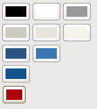

Defines skin classes for the "Terra" theme.
Terra skins get their colors from the theme's color palette, which contains 24 indexed colors. Each Terra skin exposes setter methods for each of its color styles that take an integer value; such methods allow callers to style the component by referencing the theme's color palette. The default palette is shown below:

The default color palette